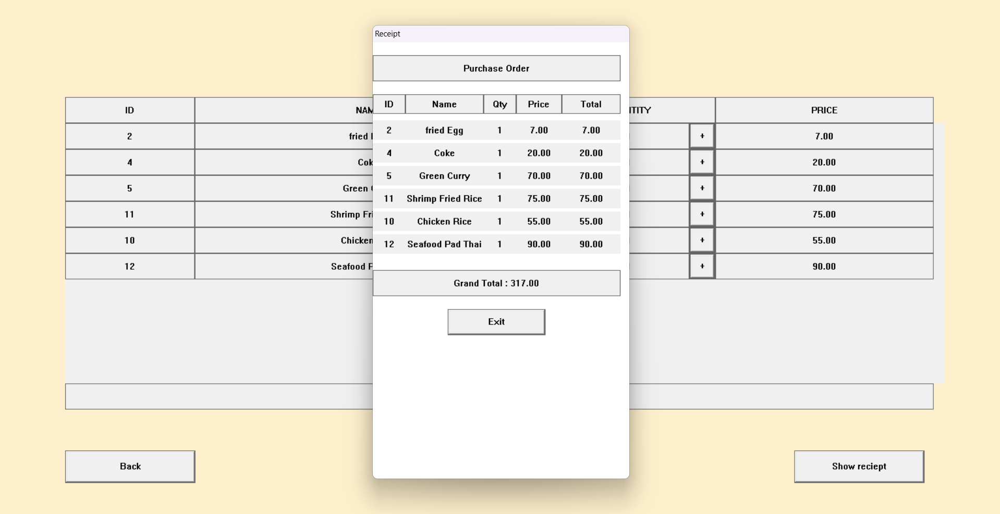
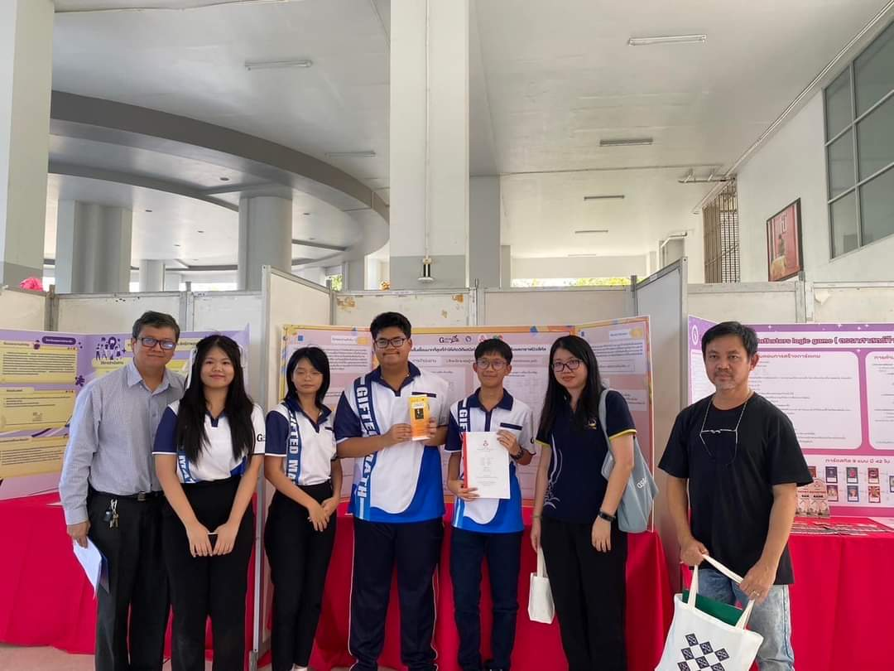
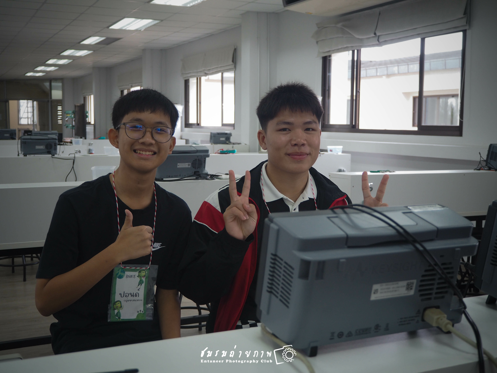

ฉันและทีมได้ทำโปรเจคระบบร้านอาหาร ซึ่งจะทำเป็นสองส่วนคือแอดมินและลูกค้า โดยที่ฝั่งแอดมินจะสามารถเพิ่มเมนูอาหารและราคาได้ ส่วนฝั่งลูกค้าจะทำการเลือกอาหารใส่ตะกร้าและสั่งซื้อออกใบเสร็จได้

ฉันและทีมในช่วงมัธยมศึกษาปีที่ 5 ได้จัดทำโครงงานชื่อ
"การตัดเส้นเชื่อมมากที่สุดที่ทำให้เกิดวิถีแฮมิลโทเนียนของกราฟปริซึมและกราฟมิวสิคัล"
และนำไปแสดงในงานนิทรรศการโครงงานคณิตศาสตร์
สำหรับโครงการ
Gifted-Math

ฉันได้เข้าร่วมค่ายเปิดบ้านวิศวกรรมศาสตร์ ครั้งที่ 18 ณ มหาวิทยาลับเชียงใหม่ ในช่วงมัธยมศึกษาปีที่ 6 ทำให้ได้รับประสบการณ์เกี่ยวกับคณะวิศวกรรมศาสตร์
ในเวลาว่างฉันชอบที่จะเล่นเกม ดูหนังหรือซีรีส์ และอ่านหนังสือบ้าง